Solutions
These are the solutions to the exercises set in the session Objects & Classes
Exercise 1
- Using the modified Circle class from the earlier stages of this lab, change the diameter of a circle object.
- Retrieve the area of this modified Circle object.
- Check that the method you wrote earlier to calculate the area still produces correct results.
Solution
Open your working shapes project located in workspaceBlueJ/labs/session01 folder.
Check that the Circle class compiles.
Change diameter
We are asked to change the diameter of a circle object.
In order to do this we require a setter method.
Here is the code for a setter that facilitates changing the diameter:
public void setDiameter(int diameter)
{
this.diameter = diameter;
}
Retrieve area modified circle object
Create a Circle object on the object bench.
Create a new default Circle.
Invoke setDiameter on the circle object, providing, for example, 100, as the new diameter.
Invoke getArea on the circle object.
The answer returned should be 7853.98 to two decimal places.
Check answer
Calculator check: Area circle diameter 100 is pi*r*r = 3.141592654*50*50 = 7853.98
Exercise 2
- Write a method to return the circumference of a circle object and integrate into project.
- The method signature could be int getCircumference().
- Create a circle object
- Invoke the method you have written and note the returned value, the circumference of the circle object.
- Use the inspector to view the circle object state. Note the values (attributes). Use these values to verify the result returned by the getCircumference method.
- Change the diameter of the circle object and retest the result returned for the length of the circumference.
Solution
Method to return circumference
public double getCircumference()
{
return Math.PI*diameter;
}
Invoke method on default Circle object
- Create default circle object.
- Invoke getCircumference
- Note returned value
- 94.25 to two decimal places.
Inspect state
Open the inspector window (Figure 2).
- Note the default diameter is 30
- Check with calculator : circumference circle whose diameter is 30 is 94.25 to 2 d.p..
Change diameter and recheck circumference
Change the diameter of the default Circle object to, for example, 100.
- Invoke getCircumference.
- Verify answer is 314.16 to 2.d.p..
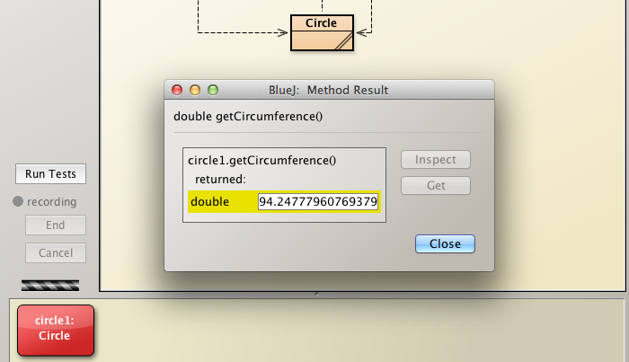
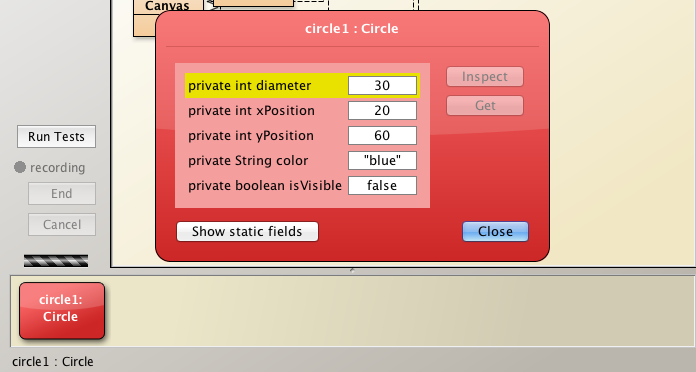
Exercise 3
- Write a method in the Triangle class to return the area of a triangle object and integrate into project.
- The method signature could be int getArea().
- Create a triangle object.
- Invoke the method you have written and note the returned value, the area of the triangle.
- Use the inspector to view the triangle object state. Note the values (attributes). Use these values to verify the result returned by the getArea method.
Solution
Method to return calculate area triangle
public double getArea()
{
return (height*width)/2;
}
Invoke getArea()
Instantiate a default Triangle on the object bench.
- Invoke getArea
- Check state in inspector window
- Figure 2
- Default attributes:
- Result as calculated by Triangle getArea method:
- Checked result:
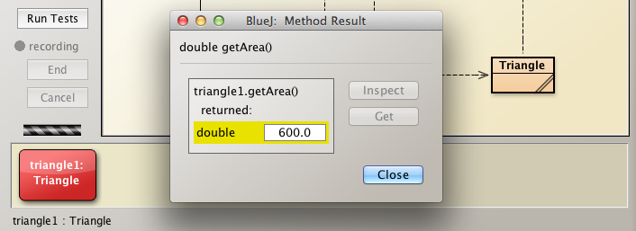
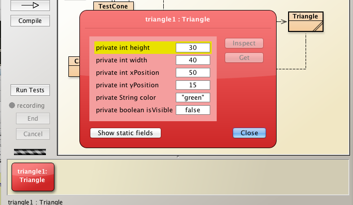
Exercise 4
- Open the lab-classes project.
- Create an object of class LabClass to cater for 4 students.
- Invoke the LabClass method numberOfStudents.
- Note the returned value. Is it what you expected?
- Create a new Student object.
- Again, invoke numberOfStudents. Understand why the returned result has not changed.
- Invoke the LabClass enrolStudent method and add the Student object just created as a parameter (argument).
- Invoke the LabClass method numberOfStudents. Satisfy yourself the answer is correct.
- Create a further 3 Student objects.
- Enroll these 3 students.
- Check the number of students in the lab class. Is the number correct? Does it correspond to the number of students enrolled.
- Inspect the LabClass object state to verify the number of students corresponds to the number returned by the method numberOfStudents and to the number of students that you actually enrolled.
- Invoke LabClass printList method to see a list of all the students in lab. It should be printed to the BlueJ terminal window
Solution
-
Create LabClass object named labClass1
- Enter 4 as actual parameter (argument)
- Figure 1
-
Invoke numberStudents method on labClass1
- Figure 2
- 0 the returned value
- No students yet enrolled so this value expected
- Create a Student object named student1
- Again, invoke numberStudents on labClass1
- Still zero: student has not been enrolled.
- Enroll student1 in lab class
-
Invoke enrollStudent on Student object, student1
- Invoke numberStudents on labClass1
- The number of students enrolled should be returned as one
-
Create a further 3 student objects
- Enroll the three
- Check the number enrolled is now 4 by invoking numberStudents on labClass1
-
Open LabClass inspector
- Figure 7
- Notice the field "private List<Student> students"
- Select this field and press the Inspect button
- This will open a further inspector window
- Figure 8
- the field "int modCount = 4" represents the number of enrolled students
- this value is correct
- Finally: invoke the printList method on labClass1
- The output should be similar to that in Figure 9
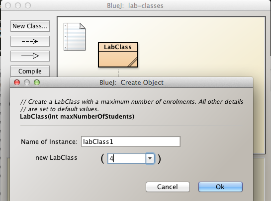
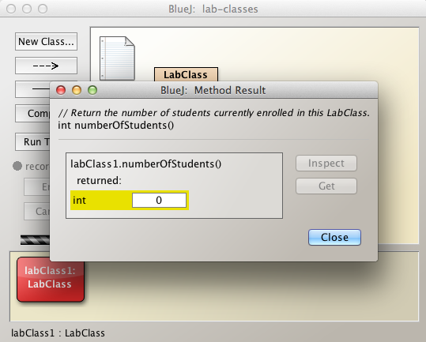
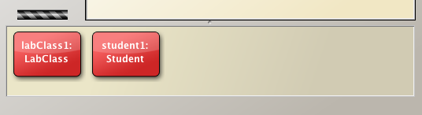
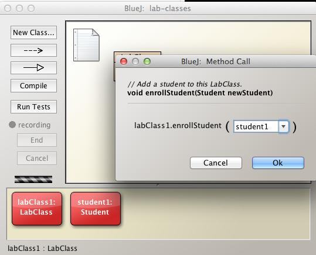
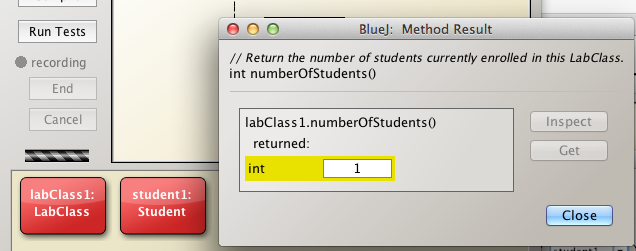
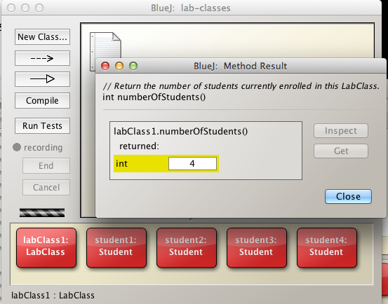
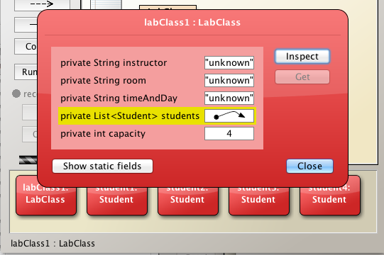
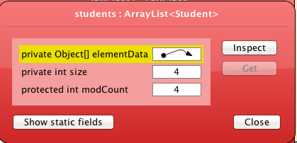
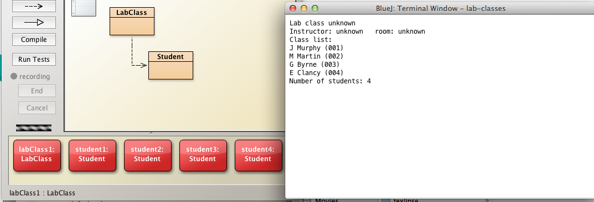
Exercise 5 (Advanced)
public Cone(double height, Circle base);

Solution
-
Right cick on the BlueJ shapes window and in the drop-down menu that appears, invoked new Class and name it Cone.
-
Open Cone in the editor and delete all except the following:
public class Cone
{
}
Check that this compiles.
We are obliged to comply with the specification for the class' fields which are a Circle object reference and a primitive type, a double, representing the cone height.
Add these fields and recompile.
public class Cone
{
private double height;
private Circle base;
}
A constructor signature is also specified: here is the constructor code:
public Cone(double height, Circle base)
{
this.height = height;
this.base = base;
}
Add the constructor to the class and recompile.
Here is the complete source code for the Cone class as specified in the exercise:
public class Cone
{
private double height;
private Circle base;
public Cone(double height, Circle base)
{
this.height = height;
this.base = base;
}
}
Exercise 6 (Advanced)
Write and test a method to calculate and return the volume of the cone.
Solution
Method to calculate volume of cone
The volume of a right circular cone is 1/3 * height * area base which is equivalent to PI times diameter squared divided by 12.
See here for further information.
This may be expressed in Java as follows:
Math.PI*diameter*diameter*height/12;
Notice that a class Math is used to access pi.
We could have simply inserted a numberic value, for example, 3.141592654.
However, the use of number values throughout code, pejoratively referred to as magic numbers, is strongly discouraged because
- It adds to the difficulty of understanding code
- It makes maintenance more difficult
- It increases the risk of bugs being introduced both during development and maintenance.
The Math class is contained with the java.lang package. This is a fundamental package and does not require an import statement.
We can incorporate the above statement into a the volume method as follows:
public double volume()
{
double diameter = base.getDiameter();
return Math.PI*diameter*diameter*height/12;
}
Add this method to the Cone class and attempt to compile.
This may generate a compile-time error with the following message output at the bottom of the Cone-shapes window as illustrated in Figure 1.
cannot find symbol - method getDiameter()
The message is informing us that our attempt to invoke a method in the Circle class has failed because no such method is accessible
To resolve this issue open the Circle source code in the editor and insert a getter method for the diameter field as follows:
public double getDiameter()
{
return diameter;
}
Observe that we have returned diameter as a double despite the variable being declared as an int in Circle. Clearly, the integer value is being transparently cast to a double by the compiler.
Add getDiameter to Circle and press the compile button on the BlueJ: shapes window.
You should see a message at the bottom of the window: Compiling... Done, indicating that the Cone and associated classes are free of syntactic errors.
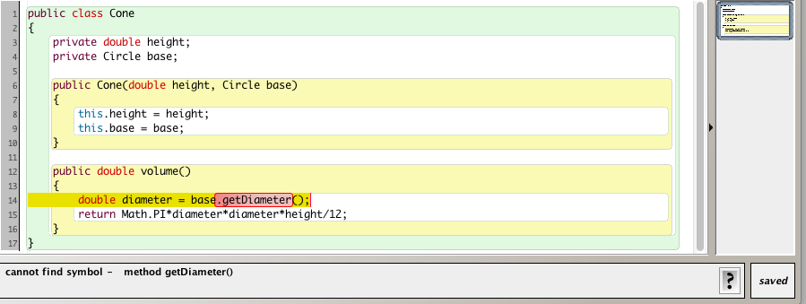
Testing method to calculate volume of cone
We shall use 3 methods to test the method we have just written - public double volume().
Method 1
- Create a default Circle object on the object bench called circle1
- Create a new Cone object by selecting the Cone class diagram (rectangle in the BlueJ shapes window), right clicking and invoking new Cone(...).
- Enter 100 for the height
- Enter circle1 for the base
Right click on the Cone object
- Invoke double volume()
- See Figure 3 for the result of invocation.
Check the answer as follows:
- Discover the default circle diameter as previously by right clicking on the Circle object and selecing Inspect which is located towards to bottom of the drop-down window.
- The default diameter is 30
- Use a calculator to evalutate the volume of the cone.
- It is 23561.94 to 2 d.p..
- This matches the value returned by the volume method (Figure 3).
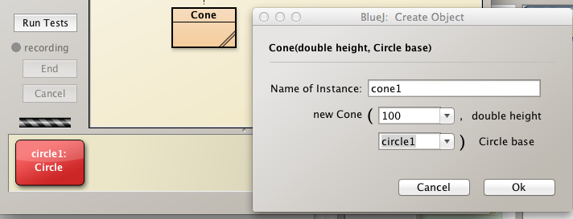
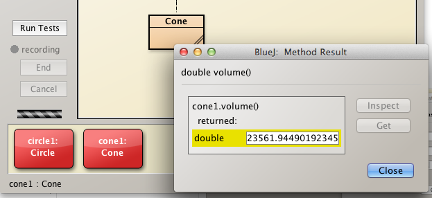
Method 2
- Right click on the Cone class diagram and invoke the constructor Cone(double height, Circle base)
- Accept the default Cone object name, cone2
- Enter 100 for the height
- Enter new Circle() for the base
- Press OK to create cone2
- Right click on cone2 and invoke volume.
- The same value should be returned as previously
In this case an anonymous Circle object is created as an argument in the Cone constructor
- It is referred to as an anonymous object because it is not assigned to a variable such as for example in a statement:
- Circle circle = new Circle();
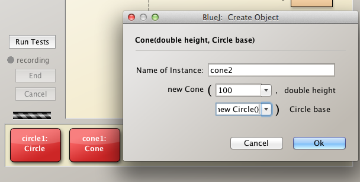
Method 3
Construct a new class called TestCone.
public class TestCone
{
}
Add the following method:
public double volume()
{
double height = 100;
Circle base = new Circle();
Cone cone = new Cone(height, base);
return cone.volume();
}
This method creates a Cone object with similar dimensions to these created in method 1 and 2 above and so we would expect to have the same volume returned by the volume method.
- Add this method and check that TestClass compiles.
- Create a TestClass object on the object bench.
- Invoke volume on the TestClass object:
- The result is illustrated in Figure 5.
- The result matches earlier results.
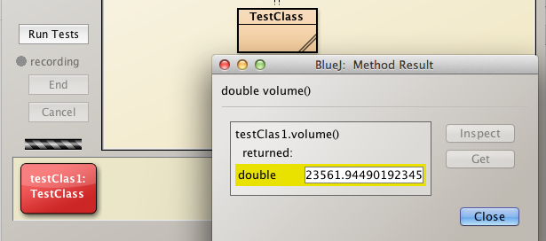
The method volume in TestClass is quite verbose: we have written it so to illustrate clearly the steps being taken.
Here are two progressively more terse versions of the same method.
- The have been given slightly different names so that you can include all three methods in TestClass and observe they generate the same results.
public double volume2()
{
Cone cone = new Cone(100, new Circle());
return cone.volume();
}
public double volume3()
{
return new Cone(100, new Circle()).volume();
}
Add these method to TestClass and invoke each in turn, verifying that all three return similar values as illustrated in Figure 6.
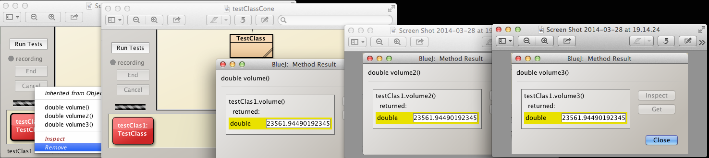
Here is the complete source for TestClass
public class TestClass
{
public double volume()
{
double height = 100;
Circle base = new Circle();
Cone cone = new Cone(height, base);
return cone.volume();
}
public double volume2()
{
Cone cone = new Cone(100, new Circle());
return cone.volume();
}
public double volume3()
{
return new Cone(100, new Circle()).volume();
}
}
Exercise 7 (Advanced)
Write and test a method to calculate and return the surface area of the cone including the base.
Solution
Derivation of the volume of a cone is elegantly dealt with here.
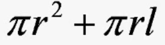
Here is the code for a method surfaceArea that uses this formula:
public double surfaceArea()
{
double radius = base.getDiameter()/2.0;
double slantHeight = Math.hypot(radius, height);
double areaTop = Math.PI*radius*slantHeight;
double areaBase = base.getArea();
return areaTop + areaBase;
}
Add this method to the Cone class and compile.
You will encounter a compile-time error:
- cannot find symbol - method getArea().
We can fix this be adding a method, getArea to the Circle class.
Open the Circle class code in the editor and add this method:
public double getArea()
{
return Math.PI*diameter*diameter/4;
}
The project shapes should now compile.
Use the three methods employed in the previous Exercise 6 to test the surfaceArea method.
Here, in Figure 2, is the outcome of a test using a default Circle object from the object bench.
- The result is 5471.97 to 2 d.p..
- Using a radius of 15 and height of 100 will produce a similar result when using the formula in Figure 1 directly.
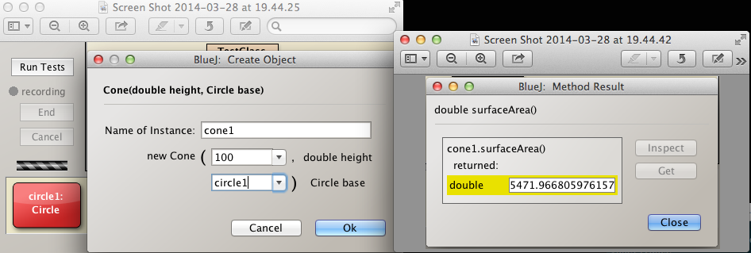